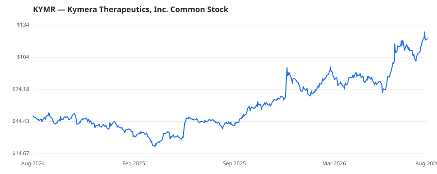

bullish · bearish · n/a — dots: price>SMA10 · SMA10>SMA50 · SMA50>SMA200 · up>down volume (20d)
Pharmaceuticals & Biotech · mid cap

Kymera Therapeutics Inc is a clinical-stage biopharmaceutical company dedicated to reinventing the treatment of human disease through the development of differentiated medicines that address health problems and meaningfully improve patients' lives. It is committed to novel technologies to address targets that have known disease-causing biology, but which have not been drugged, or have been inadequately drugged, often based on limitations of existing technologies. Its approach is intended to discover and develop a new generation of medicines in a disease-agnostic manner. Its product pipelines a BIOLOGICAL PRODUCTS, (NO DIAGNOSTIC SUBSTANCES) · website
| Revenue | $39.2M | Net income | $-311.4M |
|---|---|---|---|
| Operating income | $-349.4M | Diluted EPS | $-3.69 |
| Assets | $1.7B | Equity | $1.6B |
This name produced 0.3% of the ranked funds’ total alpha.
| Fund | Fund alpha vs SPY | Position | % of book |
|---|---|---|---|
| Merck & Co., Inc. | +227% | $89M | 16.8% |
| Nextech Invest, Ltd. | +321% | $32M | 1.5% |
| PSP Research LLC | +2% | $0M | 0.2% |
Hedge data: SEC EDGAR 13F · ranked funds beat SPY in >50% of their quarters · fund alpha = mirror-portfolio return minus SPY.